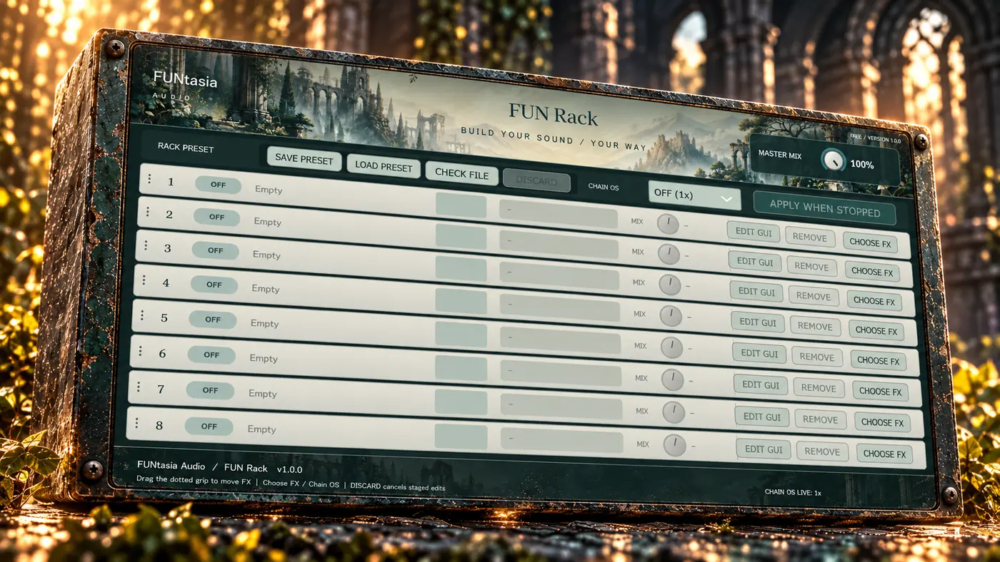

免費 · VST3 FX 生態系統 · v1.0.0
FUN Rack
組合工具，打造專屬於你的聲音。
FUN Rack 是 FUNtasia Audio 的效果器生態系統核心：它的設計目的，是讓現在及未來陸續推出的 FUN 外掛能自由組合，像煉金術一樣打造屬於自己的音訊設備。
它也專為整合其他廠牌的 VST3 音訊效果器而設計。將相容的 VST3 放入最多八個串聯插槽，調整順序，並分別控制每個插槽的 MIX 與整體 MASTER MIX。
8 SERIAL VST3 SLOTSPER-SLOT MIXMASTER MIXCHAIN OS 1× / 2× / 4× / 8×PRESETS
FUN Rack 是串聯式音訊效果器託管工具，不是合成器，也不提供自由並聯路由。第三方 VST3 效果器需要另外安裝。
PDF 使用手冊
Kaisei Opti Regular · SIL Open Font License 1.1 · OFL 1.1